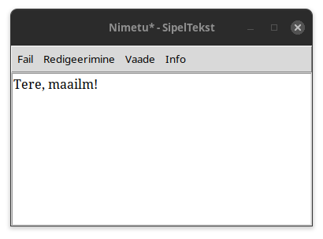

SipelTekst
Lihtne avatud lähtekoodiga tekstiredaktor, Kirju järeltulija

Funktsioonid
- Tagasi võtmine ja uuesti tegemine
- Automaatse salvestamise võimalus
- Värvide muutmine
- Teksti otsimise funktsioon
- Asendamise funktsioon
- Info teksti kohta nt mitu rida
- Fonti suuremaks/väiksemaks tegemine
- Fonti valimine
Tähelepanu!
SipelTekstis saab küll muuta stiili, aga kuna SipelTekst EI OLE RIKASTEKSTIREDAKTOR,
siis failis on ainult tekst ning teisel inimesel võib olla täiesti teised värvid ja font.
Installi nüüd
Kood

copyright © valeNimi4
Litsents GPL v3